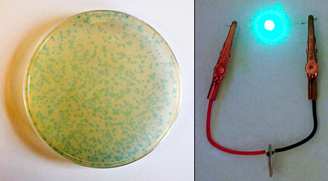

Welcome to Vol. 10 No. 4 of Design Science News, the e-bulletin of the Buckminster Fuller Institute
Design Science News brings you important updates about BFI’s programs and activities as well as news from around the world related to humanity’s option for success and comprehensive design science.Join us in Chicago June 5th - 7th to celebrate the winner of the 2009 Buckminster Fuller Challenge
The Buckminster Fuller Challenge jury is nearing the final stages of their deliberation process and will meet on April 20th to select the winner and runner up from the pool of thirty-three outstanding finalists. The winner and runner up will be announced on May 4th.
The winner and runner up will be honored at a conferring ceremony on June 6th in Chicago, IL featuring a presentation of the winning strategy and a panel discussion with our jurors, moderated by Susan Szenasy, Editor in Chief of Metropolis Magazine.
Click here for more details about the conferring ceremony and other events. We hope to see you in Chicago!
Bronx Zoo Earth Expo 2009
BFI is proud to participate in the Bronx Zoo’s Earth Expo 2009! This first annual event showcases companies and organizations, both local and international, working to create a more sustainable planet for all. We will be on site April 14th, 15th, and 17th to engage visitors with the work of BFI and the pioneering influence of Buckminster Fuller.Click here for more information about Earth Expo 2009, including a full list of participating organizations.
Anyone interested in volunteering please contact Will Elkins at will (at) bfi (dot) org or call 718 290 9280.
New edition of the Raleigh Dymaxion Map now available in our online store

This beautiful, newly printed edition of the Dymaxion map was first designed in Raleigh, North Carolina by Buckminster Fuller and BFI Board member Shoji Sadao. The ocean is colored light gray and the land masses are softly color-coded for mean annual temperatures. It is printed on 34 x 22 inch 80 lb. semi-gloss stock. Includes a two page info-sheet about the Dymaxion map and how it differs from other world maps.
Find out more about the Dymaxion Map
Purchase a copy from our online store
Purchase a laminated or folded version from ODT Maps
TRENDS & PERSPECTIVES
HUD and DOT announce interagency partnership to promote sustainable communities
U.S. Department of Housing and Urban Development (HUD) Secretary Shaun Donovan and U.S. Department of Transportation (DOT) Secretary Ray LaHood have announced a new partnership to help American families gain better access to affordable housing, more transportation options, and lower transportation costs. The average working American family spends nearly 60 percent of its budget on housing and transportation costs, making these two areas the largest expenses for American families. Donovan and LaHood want to seek ways to cut these costs by focusing their efforts on creating affordable, sustainable communities.
The Secretaries discussed their plans for sustainable communities today at a U.S. House of Representatives Appropriations Subcommittee on Transportation and Housing hearing titled, “Livable Communities, Transit Oriented Development, and incorporating Green Building Practices into Federal Housing and Transportation.” To read the full text of Secretary Donovan’s testimony, visit HUD’s website.
“One of my highest priorities is to help promote more livable communities through sustainable surface transportation programs,” said Secretary LaHood.
“This partnership will help expand every American family’s choices for affordable housing and transportation,” said Secretary Donovan. “HUD’s central mission - ensuring that every American has access to decent, affordable housing - can be achieved only in context of the housing, transportation, and energy costs and choices that American families experience each day.”
DOT and HUD have created a high-level interagency task force to better coordinate federal transportation and housing investments and identify strategies to give American families:
- More choices for affordable housing near employment opportunities;More transportation options, to lower transportation costs, shorten travel times, and improve the environment; andSafe, livable, healthy communities.
Related:
» Recycling the suburbs
» Reinstating the interstate
In silt, Bangladesh sees potential shield against sea level rise
The rivers that course down from the Himalayas and into this crowded delta bring an annual tide of gift and curse. They flood low-lying paddies for several months, sometimes years, at a time. And they ferry mountains of silt and sand from far away upstream.
Most of that sediment washes out into the roiling Bay of Bengal. But an accidental discovery by desperate delta folk here may hold clues to how Bangladesh, one of the world’s most vulnerable countries to climate change, could harness some of that dark, rich Himalayan muck to protect itself against sea level rise.
Instead of allowing the silt to settle where it wants, Bangladesh has begun to channel it to where it is needed - to fill in shallow soup bowls of land prone to flooding, or to create new land off its long, exposed coast.
The efforts have been limited to small experimental patches, not uniformly promising, and there is still ample concern that a swelling sea could one day soon swallow parts of Bangladesh. But the emerging evidence suggests that a nation that many see as indefensible to the ravages of human-induced climate change could literally raise itself up and save its people - and do so cheaply and simply, using what the mountains and tides bring.
“You can do a lot with the silt that these rivers bring,” said Bea M. ten Tusscher, the Dutch ambassador to Bangladesh. The Netherlands, itself accustomed to engineering its vulnerable low-lands, helps Bangladesh with water management projects. “Those are like little diamonds,” Ms. ten Tusscher said. “You have to use it.” (Source: New York Times)
Related:
» Can river silt save Bangladesh?
Viruses used to grow greener batteries
With the help of a common virus, scientists have built a battery that rivals the state-of-the-art rechargeable models now powering personal electronics and hybrid vehicles. The hope is to replace the costly, toxic electrodes currently used in lithium-ion batteries.
The researchers modified the M13 virus, which infects only bacteria, to grow proteins on its surface that attract amorphous iron phosphate. The result: Wires just nanometers thick of the material, which is cheaper and environmentally friendlier than ones currently used to make electrodes for lithium-ion batteries. The scientists also programmed the virus so that one end became sticky to carbon nanotubes, which are extraordinarily good conductors of electricity. Electrons easily travel along the carbon nanotubes to the amorphous iron phosphate networks, transferring energy in a very short time. Using these ingredients, the researchers devised coin-sized batteries comparable in performance to commercial lithium-ion batteries.
“The more genetic engineering we did, the better it got,” said researcher Angela Belcher, a materials scientist at the Massachusetts Institute of Technology.
Carbon nanotubes are still expensive, and researchers debate what risks they might pose to the environment. If the nanotubes become a barrier, the same process could be performed with other good electrical conductors such as silver or gold, Belcher said.
While her team is still in the early stages of its work, Belcher thinks the project could soon get “twice the power performance of what we demonstrated with this proof of principle here.” (Source: National Geographic)
Related:
» MIT engineers work towards cell-sized batteries
Robotic fish to patrol oceans for pollution
An extraordinarily realistic, extraordinarily expensive robotic fish has been created to patrol the open sea and sniff out pollution.The 1.5 meter long robotic fish each requires about $30,000 to make. Their purpose is to head out into the open water, take in data about water pollutants, return to a charging station about every 8 hours and while charging, submit data about water quality. The hope is that they’ll lead to early detection of pollution sources such as leaks in underwater pipelines.
The issues with this first batch of fish is pretty clear - they’re way too expensive to be made in numbers big enough to be very helpful; their charge lasts just 8 hours so they aren’t able to have a very large range away from their charging stations; they run a pretty good risk of getting a bite taken out of them.
And yet, when it comes to monitoring our ocean’s health, it’s tough not to want to see a device that can be part of the environment while helping us to save it. The researchers think so too, and if the tests of the first 5 of these fish in the waters off Spain go well, they hope they’ll be used in rivers, lakes and oceans worldwide. (Source: Treehugger)
RESOURCES
Make sense, not stuff: A three step plan to connect design schools with the green economy
John Thackara imagines a new paradigm for design schools to adapt to changing world conditions in this engaging text. He writes: What would architects design, if they did not design buildings? What would designers design, if they did not design products, or posters?My question is not a rhetorical one. On the contrary, I believe design schools are in danger of being marginalised by events. The world is changing around them fast - and they are not. Or not fast enough. I agree with Al Gore that the world has reached a tipping point in its responses to climate change, resource depletion, and economic crisis: Changes we have all talked about for years are starting to be implemented.
But design schools are finding it hard to move on from the old paradigm of design-for-production, and design for individual expression.
Download the full text (pdf)
Related:
» Redesigning America's Future, a proposal by the U.S. National Design Policy Initiative
Building a Geodesic Dome at MIT
From reader George Mokray: The MIT Museum built some model domes made out of rolled up posters one day in the lobby of Building 13 one day in January. Werner Grundl helped build the domes and shot this video of the event.They are thinking of building larger and more permanent dome in the Spring. The MIT Museum has a collection of artifacts and materials from a dome building visit that Buckminster Fuller paid to the Institute in the early 1950s.
More information about geodesics at MIT is available from dlui (at) mit (dot) edu
Domebook
Let’s see... you’ve stretched a blanket between two chairs to make a tent for your kids to play in. You've pushed furniture together to make a fort. And you’ve cut holes in the sides of a refrigerator carton to make them a puppet theater. So, are you ready to build them the coolest play structure on the block?
If you can use a calculator, measure accurately, draw straight lines, and cut, glue and staple cardboard, you can construct a geodesic play-dome in a couple of weekends. Whether you are a parent, grandparent, teacher, or youth group leader, Domebook can show you how. (Thanks to reader Thomas Camilli for tipping us off to Domebook)
EVENTS
Radical Nature: Art and Architecture for a Changing Planet 1969–2009
Barbican Art Gallery
London
June 19 - October 18, 2009
The beauty and wonder of nature have provided inspiration for artists and architects for centuries. Since the 1960s, the increasingly evident degradation of the natural world and the effects of climate change have brought a new urgency to their responses. Radical Nature is the first exhibition to bring together key figures across different generations who have created utopian works and inspiring solutions for our ever-changing planet.
Radical Nature draws on ideas that have emerged out of Land Art, environmental activism, experimental architecture and utopianism. The exhibition is designed as one fantastical landscape, with each piece introducing into the gallery space a dramatic portion of nature. Work by pioneering figures such as the architectural collective Ant Farm and visionary architect Richard Buckminster Fuller, artists Joseph Beuys, Agnes Denes, Hans Haacke and Robert Smithson are shown alongside pieces by a younger generation of practitioners including Heather and Ivan Morison, Philippe Rahm and Simon Starling. Radical Nature also features specially commissioned and restaged historical installations, some of which are located in the outdoor spaces around the Barbican while a satellite project by the architectural collective EXYZT is situated off site.
A fully illustrated catalogue, with a foreword by environmental campaigner and writer Jonathon Porritt, accompanies the exhibition and is available in the Art Gallery Shop on level 3 and online.
To unsubscribe from this newsletter, send email to this address.
To never receive email from The Buckminster Fuller Institute, send email to this address.
This email is sent from:
The Buckminster Fuller Institute
{domain.address}